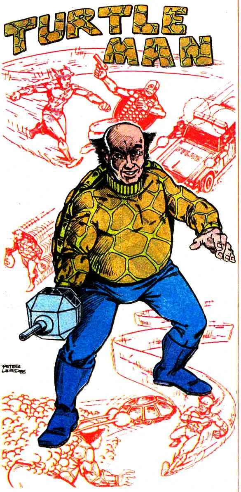

Sobre Flash
Medos do Heroi
Viloes
Ele idolatrava a Tartaruga, um vilão mais velho que lutou contra o Flash original, Jay Garrick. Certa vez, o Homem Tartaruga planejou um assalto ao Banco Central em duas etapas. Primeiro, ele segurou o banco e abriu o cofre, escondendo-se nele. Ele planejava voltar mais tarde e realmente pegar o dinheiro, pegando todos desprevenidos. O Flash, em seu primeiro caso, veio para detê-lo, mas não viu o Homem Tartaruga escondido. Mais tarde, ele pintou sua silhueta em uma parede de tijolos no final de um beco próximo ao banco. Pensando que essa sombra é a do Homem Tartaruga, Flash correu atrás dela, mas acabou perfurando a parede. Percebendo que o vilão foi para os esgotos subterrâneos, o Flash o seguiu até chegar ao rio. O Homem Tartaruga escapou em um barco a remo, usando a mão para remar. Ele prendeu uma lancha, que Flash tentou usar para alcançá-lo, sem sucesso. Flash então correu atrás dele em cima da água, mas suas vibrações apenas empurraram Turtle Man mais à frente dele. Flash então pensou em correr ao redor do barco, o que criou um vórtice, enviando o Homem Tartaruga voando de seu barco para os braços do Flash. O Flash o entregou à polícia. Ele finalmente se encontrou com seu ídolo, a Tartaruga. O vilão mais velho, fascinado pelos gadgets de Tartaruga do Homem Tartaruga, deu a ele um laboratório para usar. No entanto, houve uma explosão no laboratório, desfigurando o Homem Tartaruga e forçando-o a viver em uma prótese eletrônica. Juntos, os dois tentaram governar Keystone City. No entanto, sua parceria sempre parecia desequilibrada em favor de seu colega mais velho. Eles construíram um vasto império criminoso baseado em Keystone, em uma mina de sal abandonada. O Homem Tartaruga projetou um projetor de ultrassom, que eles usaram contra Wally West quando ele descobriu um armazém que eles usavam como esconderijo. Isso o colocou em estase, fazendo com que ele alucinasse. O Homem Tartaruga estava bastante orgulhoso de suas invenções, mas amargo por a Tartaruga ter agido como se fossem suas. Ele desejava ser mais do que o bandido de segunda categoria que ele era. Quando ele foi capturado, o Homem Tartaruga ficou realmente feliz. Ele foi capaz de agir como se toda a provação tivesse sido obra dele. Ele finalmente foi respeitado, pelo menos da maneira que queria ser e foi enviado para Belle Reve para ser preso depois.